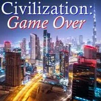
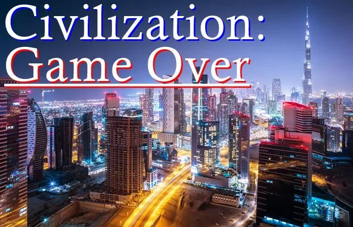

- THE ROAD AHEAD - FORGET CLIMATE CHANGE by Joey Moncarz from Deep Green News Service- Let’s forget about climate change, because it’s a distraction. Of course it’s real, it’s devastating and it will wipe out most life on the planet, but let’s move on. The reason we can move on is that we really shouldn’t really need climate change to get us off our asses and do something. Haven’t we been paying attention at all to the world around us? - Just consider, that even if climate change wasn’t happening, we’re still wiping out most life on the planet and making everyone’s lives more and more miserable. We do this through our modern, “advanced,” “civilized,” and “superior” ways of living characterised by: - Industrial agriculture, which poisons all our food, poisons us with genetically modified and ‘gene-edited’ organisms, destroys forests, kills rivers (through excess nitrogen and irrigation), depletes water, salinates the soil (in essence, killing it), wipes out insects, birds, and any animal it deems a ‘pest’, and tortures hundreds of millions of animals. - The epidemic levels of the “diseases of civilization”: cancer, diabetes, heart disease, high blood pressure, obesity, osteoporosis, arthritis, asthma, liver disease, Alzheimer’s, and autism - Epidemic levels of mental illness, depression, anxiety, suicide, and meaningless lives. - Slavery: besides the 21-46 million “official” slaves (more than ever before in history), there’s also the millions of sweatshop workers, factory workers, mine workers, and agricultural workers who are pretty much slaves. - Wage slavery and meaningless jobs: let’s not forget the rest of us! Allowing ourselves to be exploited for wages just to pay for food and rent – and the jobs are not just meaningless, they waste our time and ruin our lives. - The car culture, which kills 1.25 million people every year, injures or cripples tens of millions each year, kills hundreds of millions of animals each year, which requires pavement, which requires destroying forests and killing the land. It also requires oil, which requires drilling, processing and shipping, which poisons the water, land and air. Wars are fought to control the oil, killing and poisoning even more. The exhaust fumes, besides releasing greenhouse gases, also contain a multitude of toxic, carcinogenic chemicals and other toxic substances. - The mass media and screen culture: brainwashing us and making us addicts, just like any other addictive substance (think: cocaine, cigarettes, sugar, coffee, methamphetamine, opiods, etc.) And they know precisely what they’re doing. The more we watch, the dumber and more passive and useless we become. That’s why tech execs don’t let their own kids use screens. - Meanwhile, fisheries are killing more than 100 million sharks and rays every year. - 60% of wildlife has been wiped out in the last 40 years Supposedly “intelligent” people built and now oversee thousands of nuclear bombs and missiles, enough to wipe out all of life hundreds of times over. - Only 4% of all mammals, by weight, are wild. The rest are humans and their livestock. - Supposedly “intelligent” people built and now oversee hundreds of nuclear reactors, each of which produces thousands of tons of highly radioactive and toxic waste which must be safely stored for tens of thousands of years (which is impossible) and all of which, are in fact, currently radiating the planet. - The corporate takeover of the planet, the aim of which is to increase profit by destroying, killing, poisoning, and exploiting everything in existence. - The rise of technofacism and the police state, based on total mass surveillance, in which privacy ceases to exist and the state/military/police can kill and imprison anyone, at any time, and for any reason. - For goodness sake, if this isn’t enough to make us fight back, then climate change isn’t going to do it, either! - That’s why we should forget about climate change and focus on the fact that this entire way of life has to end. Everything! Scrap everything! It’s called civilization. From now on, consider “civilization” a bad word. The worst word you know. Living in cities and relying on farms has never – never – been a healthy way of life. For the entire history of civilizations (that’s only about 6,000 years), most people in any civilization have been either starving or on the edge of starvation (Diamond 1987; Harris 1991; Ponting 2007). Read that a few times and let that sink in. Civilization, like capitalism, is a way of life in which a tiny elite rule over everyone else, making everyone else’s lives miserable. - The point is, any way of life in which an elite even exists is pathological and contradicts how humans evolved to live. - While Industrial civilization has it’s own unique details and is especially destructive, don’t think that way back in Ancient Greece or Rome or the Maya or Incas or Aztecs or Indus River or in Ancient China that life was any better. All civilizations, dating back to the first in ancient Mesopotamia, share the same pathological characteristics: - overpopulation - patriarchal - based on the idea of human superiority over all other life forms - deforestation - ecological destruction - salinization of the soil - low nutrition - frequent famines - most of the population either hungry or starving - the majority of people living in poverty - slavery and various forms of forced labor - hierarchical social arrangement with a tiny elite ruling over everyone else - kings, queens, priests, governments - armies - police and prisons to lock up the average person (but never the kings, queens, priests or government agents) - surveillance - constant war - It should be obvious that the real problem is the social arrangement known as civilization. So we can stop blaming capitalism, because all civilizations, “capitalist” or not, end up with the same problems – ecological and social destruction (Diamond 1987, 2005; Jensen 2006, 2016; Redman 1999; Scott 2017; Tainter 2017; Zerzan 2005, 2018). - Climate change has also become a problem, because it distracts from the high-energy needs of civilization. The solutions that everyone has been brainwashed with – Green New Deals and “renewable energy” – are all industrial, extractive and solve absolutely nothing: solar panels, wind turbines, mass transportation, “livable cities”, more technology, etc. And overpopulation is either ignored or denied (Friedemann 2019, 2019; Huessemann 2011; Trainer 2010; Zehner 2012). - Consumption remains, but now it’s green consumption. - Meaningless jobs remain, but now they’re green jobs. - Wars and armies remain, but now they’re solar-powered – so they’re sustainable. - The elite remains, and most people remain poor – but somehow, with all those solar panels, it’s all healthy and good! - So we’re back to the start. This way of living is destroying life on the planet and making everyone miserable – with or without climate change. - Now let’s contrast civilization with the way humans evolved to live, the way we lived for two million years, before civilizations arose just 6000 years ago. The hunter-gatherer life had these characteristics: - egalitarian (no bosses, no hierarchy, no illegitimate authority) - no rich or poor - enormous amount of leisure time - plenty of food, varied diet - limited effort required for obtaining food - healthy and strong - strong teeth (tooth decay is rare) - long lives - no concept of “work” - happy children - meaningful, joyful lives - war is the “rare exception” - highly sustainable – it lasted for two million years - (Diamond 1987, 2012; Friedman 2010; Gedgaudas 2018; Hewlett and Lamb 2005; Ingold 1994; Narvaez 2010, 2013, 2014; Ratey and Manning 2014; Sahlins 2009; Suzman 2017; Woodburn 1982) - That’s also the lifestyle in which the human brain tripled in size. Since we domesticated ourselves, the human brain has shrunk by 10 percent (Alban 2014; McAuliffe 2011). Every domesticated animal suffers a decrease in brain size (Scott 2017). - So forget climate change. It’s civilization! - Ci-vi-li-za-tion. - Scrap civilization, before it’s too late. - Actually, watch this first. - Then let's talk. - A viewer calling her/or/him self 'randy109' made the following comment on this YouTube video: - "When a Man, in this case Derrick Jensen, states FACTS how come some people say that this is merely his 'opinion', When you state a FACT it is not an opinion, it is a Fact. I hear people deride Jensen and insult him but I've never heard anyone yet disprove anything he has said. Read his Premises and one by one try to disprove them. Can't do it. It is just that many people don't want to face up to the obvious. Derrick gets into trouble for stating Obvious Facts. That's how far fcked up Propaganda has infiltrated our minds..." - Note:- This website is a - Bubble in the Bubble Mapof the massively-multiplayer online-and-offline thoughtware-upgrade personal-transformation game called- StartOver.xyz. It is a- doorwayto- experimentsthat- upgrade your thoughtwareso you can- createmore- possibility. Your- knowledgeis what you think- about. Your- thoughtwareis what you use to think- with. When you- change your thoughtware, you go through a- liquid stateas your mind- reorganizesitself. Liquid states can bring up transformational- feelingsand- emotions. Please read this website- responsibly. By- upgrading your thoughtwareyou- build matrixto hold more- consciousness. No one can do this for you. No one can stop you from doing it. Our theory is that when we- collectively buildone million more Matrix Points we will change the morphogenetic field of the human race for the better. Reading this whole website is worth 1 Matrix Point. Doing any of the experiments earns you additional Matrix Points. Please use Matrix Code- GAMEOVER.00*to log your Matrix Points earned at this website on- http://StartOver.xyz. Thank you for playing full out!